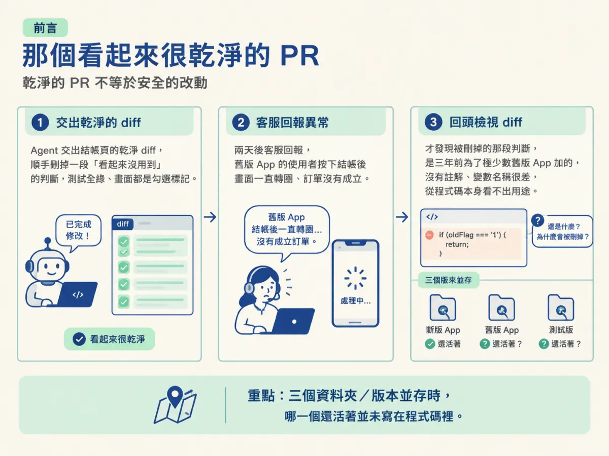
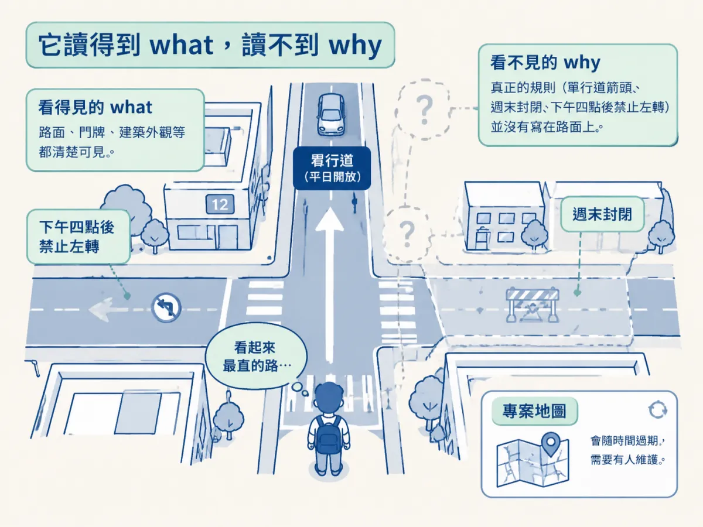
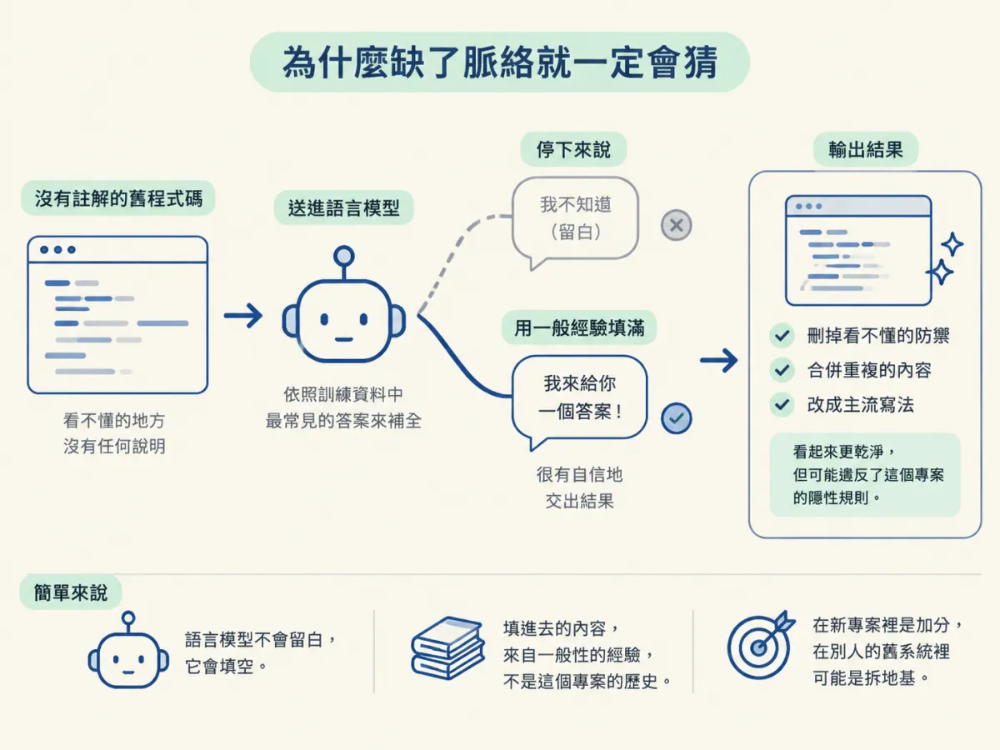
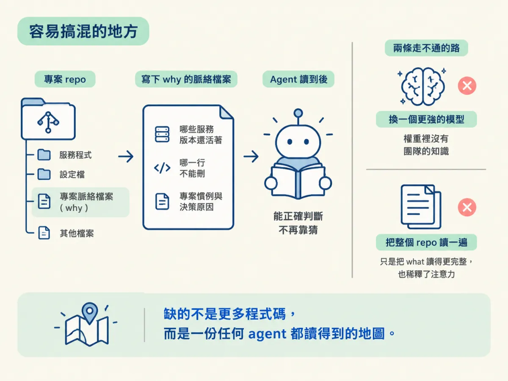

說出 agent 在舊碼庫失手的根因是只讀得到 what、讀不到 why（不是不會寫程式），並用三個具體症狀認出「沒有地圖」造成的猜測。
你加入一個跑了五年的專案，第一個任務聽起來很小：修一個結帳頁的顯示錯誤。你把錯誤訊息和相關檔案貼給 agent，它讀了幾秒，改了三個地方，還順手刪掉一段「看起來沒用到」的判斷。PR 很乾淨，測試也過了，你按下合併。
兩天後，客服回報：舊版 App 的使用者按下結帳之後，畫面一直轉圈，訂單沒有成立。你回頭看那個 diff，才發現 agent 刪掉的那段判斷，是三年前為了某個只剩極少數使用者還在用的舊版 App 加的。那段程式碼沒有任何註解，變數名稱也取很差，從程式碼本身完全看不出它的用途。
這一節要處理的就是這個場景。很多人第一次在真實專案裡用 AI，就會遇到類似的事，然後下一個結論：「它果然只會寫玩具專案。」這個結論不太對，而且會讓你錯過真正該修的東西。它不缺寫程式的能力，缺的是一張地圖。

回想你上一次從空資料夾開始建專案：你選了技術棧、定了規則、每一個資料夾都是你決定的。那種情況下 agent 表現得很好，因為整個專案的來龍去脈都在你的腦中，而它只需要照著你當下的描述做。
但真實的公司裡，你通常是加入一個已經跑了幾年的專案。設計的人早就離職了，有些決策連現在的同事都說不清楚，而且真的有客戶在用。你的日常工作不是從零開始蓋，而是改一個既有的系統，同時不弄壞已經能跑的部份。
課程把這件事講得很直白：生出一個乾淨的新專案不難；難的是讀懂一個大型程式庫，裡面全是沒寫下來的慣例、藏起來的假設，還累積了好幾年的歷史。
把程式碼想成一條街道，把「為什麼」想成這條街的規則：哪裡是單行道、哪一段週末封閉、哪個路口下午四點後不能左轉。agent 站在街上，看得到路面、看得到門牌，也看得到每一棟建築長什麼樣。這些是 what。
但它看不到那些規則。單行道不會寫在柏油路上，專案的隱性規則也不會寫在程式碼裡。於是它會挑一條「看起來最直」的路走，而那條路可能正好是一條只有平日開放的單行道。
這個比喻有一個地方不能照搬：街道規則是固定的，會公告；專案的隱性規則會隨時間改變，而且往往只存在某個人的記憶或某張已經過期的 ticket 裡。所以這張地圖不是查一次就永久有效，它需要被維護。

「沒有地圖」聽起來很抽象，但在工作現場很好認。課程舉了三個例子，你大概至少會遇到一個。
第一個：同一個服務有三個版本。 程式庫裡躺著 billing、billing-v2、billing-legacy。agent 讀完之後，很可能選最像現代寫法的那個，或最新建立的那個，因為那符合一般的「最佳實踐」。但實際上線跑的可能是最舊的那個，另外兩個是沒完成的遷移。它選錯的原因不是笨，是它只讀得到三個資料夾，讀不到「哪一個還活著」。
第二個：一行看起來沒用的程式碼，其實在擋正式環境的故障。 這種行通常長得很可疑：一個永遠是 false 的旗標、一段被註解掉的檢查、一個多餘的 try/catch。它們之所以存在，是因為某次事故。但事故的記憶不在程式碼裡，所以對 agent 來說，它們就是雜訊，而清理雜訊看起來像在做好事。
第三個：專案自己的慣例。 錯誤要怎麼回傳、log 要長什麼格式、新功能要不要包 feature flag、資料庫變更要照什麼順序上。這些規則如果沒寫下來，agent 會套用它學過的通用做法。通用做法通常不差，但跟這個專案不一致，而不一致在大型系統裡就是一種風險。
還有一個常被忽略的地方：語言模型做的事就是補全。給它一段上下文，它產出最可能接續的內容。你把一段沒有註解的舊程式碼交給它，問「這裡可以簡化嗎」，它不會回答「我不知道這段為什麼存在，因為它沒有註解」。它會用訓練資料裡最常見的答案把空白填滿，然後很有自信地交出結果。
換句話說，它不會留白，它會填空。而填進去的內容，來自一般性的經驗，不是這個專案的歷史。這就是為什麼它的產出常常「看起來更乾淨」：它把看不懂的東西刪掉、把重複的東西合併、把奇怪的寫法改成主流寫法。這些動作在乾淨的新專案裡是加分，在別人的舊系統裡可能是拆地基。

下面是一段示範用的程式碼，用來說明「what 看得見、why 看不見」長什麼樣子。它不是課程 repo 裡的檔案，是為了說明這個落差而寫的簡化版本。
// lib/checkout/place-order.ts
export async function placeOrder(cart: Cart) {
if (cart.items.length === 0) {
return { ok: false, reason: "empty" };
}
// 舊版 iOS App 結帳時會送空項目但保留 cart id
// 這裡要回 retry，讓 App 自己重送，不能直接拋錯
if (cart.legacyClient && !cart.items.some((item) => item.price > 0)) {
return { ok: false, reason: "retry" };
}
const order = await createOrder(cart);
return { ok: true, order };
}agent 讀到這個函式時，看到的是：一個空陣列檢查，接著又一個看起來很像的空檢查。第二個檢查只對 legacyClient 生效，而且條件寫得繞。它很自然會判斷「這是重複的防禦，可以合併」。一旦合併，舊版 App 收到的就不是它可以處理的 retry，而是一個錯誤畫面。
這裡缺的並不是程式能力。同樣的 agent 在一個全新專案裡，你告訴它「舊版客戶端要回 retry」，它會寫得又快又好。差的只是那句話有沒有被說出來，以及它有沒有辦法自己找到那句話。
在自己 side project 上做壞一個改動，代價大概是一個下午，最糟就是 git reset。在公司裡，同一個改動可能影響客戶、營收、私有資料，或正式環境的服務。課程特別點出這一點：風險的等級變了。
這也是為什麼「它在我自己的專案上很好用啊」和「它在公司專案上不能用」可以同時成立，兩句話都沒有說謊。差別不在模型，在於錯誤發生時，有沒有人會在半夜被叫起來。
最常見的誤解是：「換一個更強的模型就好了。」更強的模型確實比較會推理，但它不會突然知道你們公司那個 billing-legacy 才是正式環境在跑的版本。這個資訊不在權重裡，也不在程式碼裡，它只存在於你們團隊的某個地方。
第二個誤解是：「那就叫 agent 把整個 repo 讀一遍。」讀完一整包程式碼，確實比只讀一個檔案好，但這仍然只是把 what 讀得更完整。程式碼不會自己告訴你「這三個版本哪個還活著」，除非有人把它寫下來。而且把整個 repo 塞進 context，還有成本與注意力被稀釋的問題，那是以後章節的事。
所以解法不是「讓它讀更多」，而是把 why 變成它讀得到的東西。這正是後面幾節要談的那張地圖：一份寫在檔案裡、任何 agent 都讀得到的專案脈絡。

agent 在舊碼庫失手的根因，不是不會寫程式，而是只有 what、沒有 why。它讀得到程式碼寫了什麼，讀不到某個服務為什麼有三個版本、某一行為什麼不能刪、這個專案為什麼用這套慣例。缺少脈絡時，它不會停下來說不知道，而是用一般經驗把空白填滿，產出一個看起來更乾淨、卻違反專案規則的改動。新專案裡這種猜測多半無害，公司系統裡同樣的猜測可能影響客戶與營收。所以問題不在模型強不強，而在有沒有人把 why 寫成它讀得到的東西。